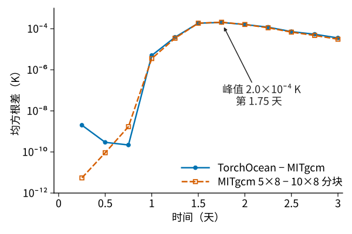
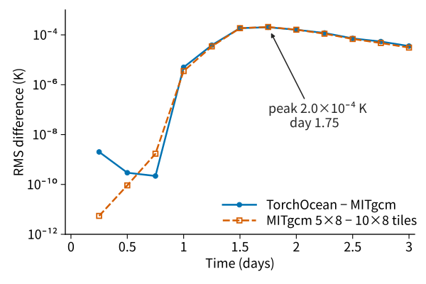

2026 年 3 月起独立开发Sole developer since March 2026
TorchOcean：可微 GPU 海洋数值模式TorchOcean: a differentiable GPU ocean model
用 PyTorch 实现 MITgcm 的海洋离散方案，同一个 GPU 程序计算正向积分和它的梯度。梯度用于四维变分同化，也能传到模式内部的神经网络，网络因此可以在模式里在线训练。
The ocean discretizations of MITgcm implemented in PyTorch, so that one GPU program computes forward integrations and their gradients. The gradients drive 4D-Var data assimilation and also reach neural networks inside the model, which can therefore be trained online.


结构Architecture
模式支持区域、全球经纬度和立方球网格，静力和非静力方程，以及开边界、KPP 垂向混合和潮汐强迫。代码约 12.8 万行 Python 和 1.5 万行 CUDA C++。
The model runs regional, global latitude–longitude and cubed-sphere grids with hydrostatic or nonhydrostatic equations, open boundaries, KPP vertical mixing and tidal forcing. The code is about 128,000 lines of Python and 15,000 lines of CUDA C++.
一个时间步分五个阶段，三处隐式求解的反向按转置方程或隐函数定理求导，不展开迭代；控制量从初始化和强迫进入，神经网络的参数也在其中。同化窗口的梯度按段存起始状态，反向时逐段重算并回传。执行上，纯 PyTorch 参照实现之上，整步编译、手写 CUDA 核和多卡区域分解可以分别开关，开与不开只差舍入误差。
A time step has five stages; the three implicit solves are differentiated through transposed solves or the implicit function theorem rather than through their iterations. Controls enter through the initialization and the forcing, and the parameters of a neural network are among them. The gradient of an assimilation window stores the first state of each segment and recomputes segment by segment in reverse. On top of the plain PyTorch reference, whole-step compilation, hand-written CUDA kernels and multi-GPU domain decomposition can each be switched on or off and change results only by rounding.
性能Performance
从 N=480 起，两张 A800 的每步耗时与 MITgcm 测到的最快核数相当；960×960×90 网格（8294 万个格点）上两卡 142 毫秒，MITgcm 用 576 核 162 毫秒、768 核 126 毫秒。非静力算例多解一个三维压力方程，两卡 422 毫秒，MITgcm 用 400 核 1421 毫秒。单卡每格点每步 3.1 纳秒，与 GPU 海洋模式 Oceananigans 同一量级。
From N=480 on, two A800 GPUs take as long per step as the fastest MITgcm core count measured; on the 960×960×90 grid (82.9 million cells) two GPUs take 142 ms, against MITgcm's 162 ms on 576 cores and 126 ms on 768 cores. The nonhydrostatic case, which adds a three-dimensional pressure equation, takes 422 ms on two GPUs against 1421 ms for MITgcm on 400 cores. One GPU spends 3.1 ns per cell per step, the same order as the GPU ocean model Oceananigans.
同一算例从 PyTorch 直接执行时的每步 786 毫秒降到 142 毫秒，主要做了三件事。
The same case went from 786 ms per step under plain PyTorch execution to 142 ms. The main work was:
- 重构时间步代码，解决 torch.compile 的编译碎片和每步重编译。原先每步碎成 131 段、6 个函数退回未编译执行，改造后整步只在求解器处断开，稳态不再重编译。 Restructuring the time step so torch.compile no longer fragments it or recompiles every step. A step used to break into 131 pieces with 6 functions falling back to uncompiled execution; now it breaks only at the solver and stops recompiling once warm.
- 手写 43 个 CUDA kernel，把 KPP 混合、隐式垂向平流、示踪物平流和水平黏性的多步计算各合并成一个 kernel。KPP 边界层深度计算的 kernel 启动从 2786 次降到 2 次，比 PyTorch 实现快 80 倍以上。其中 6 个 kernel 带手写反向。 Writing 43 CUDA kernels that fuse the multi-step computations of KPP mixing, implicit vertical advection, tracer advection and horizontal viscosity into one kernel each. The KPP boundary-layer depth went from 2,786 kernel launches to 2 and runs more than 80 times faster than the PyTorch version. Six kernels have hand-written backward passes.
- 给卡间通信加上数据依赖，解决编译器重排通信导致的多卡死锁；960×960×90 网格上双卡比单卡快 1.8 倍。 Adding data dependencies to the exchanges to fix a multi-GPU deadlock caused by the compiler reordering communication; on the 960×960×90 grid two GPUs are 1.8 times faster than one.
梯度计算把检查点按显存余量放在显存或主机内存，求解器的反向用隐式微分；网格到 N=960 为止，一次代价函数加梯度的耗时是全速正向积分的 2.8 到 4.4 倍。
For gradients, checkpoints go to GPU or host memory depending on free space, and the solvers are differentiated implicitly; up to N=960, one evaluation of the cost function and its gradient costs 2.8 to 4.4 times the full-speed forward integration.
四维变分同化4D-Var data assimilation
南海孪生试验：真值由 MITgcm 从 GLORYS 再分析起算，背景由 MITgcm 从 HYCOM 分析起算，观测从真值轨迹抽样再加噪声，有海面高度轨道、海表温度块和温盐剖面。网格 160×152×41，同化窗一天，共 52 个窗，其中 2020 年的 4 个是测试窗；每窗用 L-BFGS 迭代 30 次。
Twin experiments in the South China Sea: the truth is an MITgcm integration started from the GLORYS reanalysis, the background one started from the HYCOM analysis, and the observations are sampled from the true trajectory with noise added: SSH tracks, SST blocks and temperature and salinity profiles. The grid is 160×152×41, the window one day, and there are 52 windows, of which the 4 in 2020 are test windows; each window runs 30 L-BFGS iterations.
窗后 3 天的预报误差 52 窗平均从 0.809 降到 0.557，降低 31%，52 个窗无一例外；4 个测试窗降 28%，海面高度均方根误差降 33%。初始时刻的分析增量与真实背景误差的相关系数中位数，海表温度 0.82、温度 0.61。
Three days after the window, Q averaged over the 52 windows falls from 0.809 to 0.557, a 31% reduction, and it falls in every one of the 52 windows; on the 4 test windows Q falls by 28% and the RMS SSH error by 33%. The analysis increments at the start of the window correlate with the true background error with median coefficients of 0.82 for SST and 0.61 for temperature.
一次代价函数加梯度在一张 A800 上 29 秒，一个窗 30 次迭代中位 884 秒。KPP 对流混合系数对浮力跃变的敏感依赖会让长窗口的梯度逐步放大，原先 10 天窗的梯度达到 1028；TorchOcean 把温盐和对流系数按列在新时刻联立牛顿求解，用隐函数定理求导，方向导数与差分的相对误差约 10−6。
One evaluation of the cost function and its gradient takes 29 s on one A800, and a 30-iteration window a median of 884 s. The sharp dependence of the KPP convective diffusivity on the buoyancy jump amplifies gradients over long windows step by step; a ten-day window used to reach 1028. TorchOcean instead solves temperature, salinity and the convective diffusivity of each column together at the new time level with a Newton iteration and differentiates the solution through the implicit function theorem; directional derivatives agree with finite differences to a relative error of about 10−6.
混合建模：在同化里训练模式内的网络Hybrid modeling: training a network inside the assimilation
调整初始场的那次反向积分，同样能把梯度传到产生初始场的神经网络。网络读入一个窗的观测和背景轨迹，直接输出控制量；在线训练的损失就是该窗的 4D-Var 代价函数，梯度穿过 TorchOcean 的积分到达网络参数，不需要目标分析场。对照是离线训练：同一网络拟合各训练窗的 4D-Var 分析场，训练时不跑模式。
The reverse integration that adjusts the initial state also carries the gradient to a neural network that produces the initial state. The network reads the observations and the background trajectory of a window and outputs the controls directly. In online training the loss is the 4D-Var cost function of that window, so the gradient passes through the TorchOcean integration to the network parameters and no target analyses are needed. The comparison is offline training: the same network is fitted to the 4D-Var analyses of the training windows, and the model is not integrated during training.
| 分析场Analysis | 窗后 3 天误差 QQ at 3 d | 补上的差距Gap closed | 每窗耗时Cost (s) |
|---|---|---|---|
| 背景Background | 0.803 | 0% | 0 |
| 4D-Var，30 次迭代4D-Var, 30 iterations | 0.575 | 100% | 1412 |
| 在线训练的网络Network trained online | 0.606 | 86% | 19 |
| 离线训练的网络Network trained offline | 0.633 | 75% | 16 |
| 在线网络的分析场再做 5 次迭代Online network, then 5 iterations | 0.580 | 98% | 407 |
两个网络的分析场都落在背景和 4D-Var 之间；在线训练的网络在 4 个测试窗上补上差距的 86%，离线的 77%，每窗耗时只有 4D-Var 的 1% 到 2%。从在线网络的分析场出发再做 5 次迭代，补到 98%，耗时是完整 4D-Var 的 29%。梯度能到达同化内部的网络参数，在线训练就是把网络参数放进控制向量的强约束 4D-Var；同样的反向积分也能训练模式内部的网络。
Both networks' analyses lie between the background and 4D-Var; on the 4 test windows the online network closes 86% of the gap and the offline one 77%, at 1% to 2% of the 4D-Var cost per window. Five more iterations from the online network's analysis close 98% at 29% of the full 4D-Var cost. The gradient reaches the network parameters inside the assimilation, and online training is strong-constraint 4D-Var with the network parameters in the control vector; the same reverse integration can train networks inside the model.